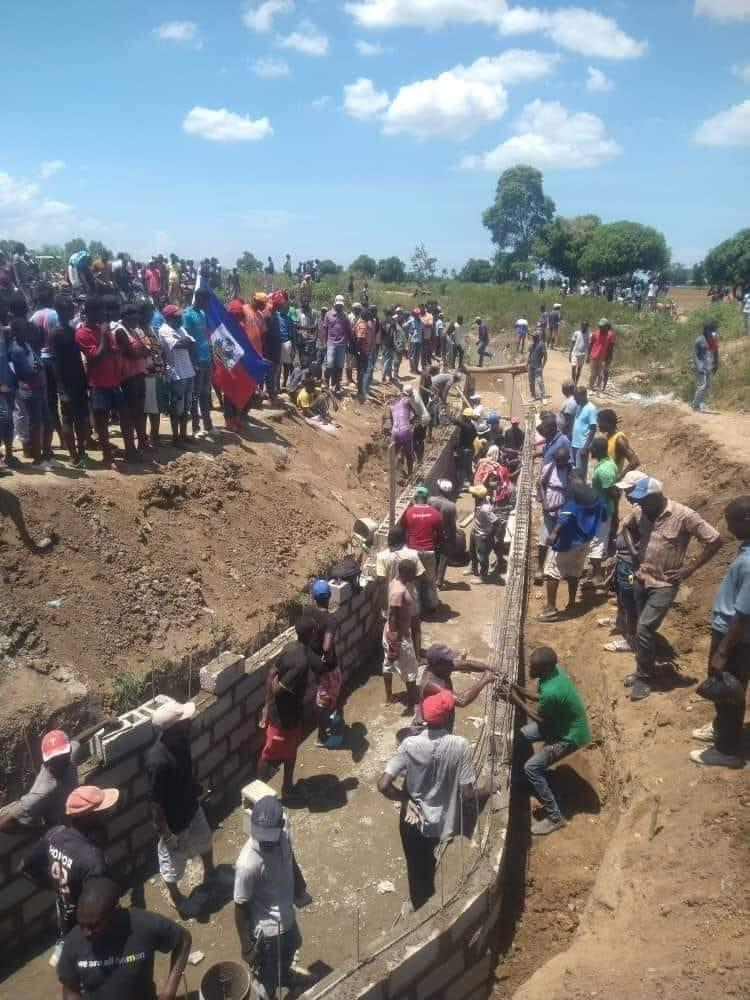
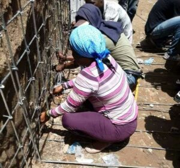
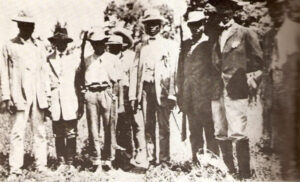

Kanal sa a se senbòl inite ak solidarite pèp ayisyen an pou yon lòt Ayiti
Nou rive rache Libète nou, fòk nou rive kenbe l ak fòs ponyèt nou, pou nou ka jwi l toutbon.
Jan Jak Dessalines
Wont pap touye w, lap fè w gen pa w.
Pwovèb ayisyen
Peyizan ayisyen, peyizan plènn Maribarou trase yon chimen diyite, gwo palto isit kou lòt bò dlo t ap pilonnen depi kèk tan.
Nou dwe konprann wout la pap fasil, move zangui tout plim tout plimay pral chache simen pikan kwenna sou chimen nou. Se pou sa, bagay ki pi enpòtan jodia se Men nan Men, patriyòt ayisyen ak tout moun ki vle peyi a pran desten granmoun li nan men l.
N ap pwofite nan sans sa fè sonje, jan li enpòtan anpil pou nou konnen kouman pou nou veye epi defèt tout konbinezon, po bannan, pwazon rat, zòt pral kontinye simen sou wout nou.
Si gen yon sektè nan peyi Ayiti ki gen fyèl ak boyo, se peyizan ayisyen. Se sa lavi a montre l. Depi nan lesklavaj lap aprann goumen, nan mawon li la pi rèd. Li pa janm fè bèk atè devan lame kolon franse a, jouk nou rive fè VETYE, 18 novanm 1803.
Apre 1804, lè grandon tout plim tout plimay nan Nò kou nan Sid, chache tout konbinezon pou l pa jwenn tè, pou l pa jwenn anpil tè, pou l pa jwenn pi bon tè yo, peyizan yo chache tout kalte taktik, tout estrateji, pou yo travay.
- Yo pran demwatye sou tè grandon (jeneral Laplas, senatè, gwo fonksyonè Leta) apre 1804. Pandanstan y ap sere ti kòb demwatye a, pou yo ka achte pi ta. Sa rele : Sere pou chofe ;
- Yo pran moso nan tè Leta gwo palto yo, pou yo plante, pou yo rekolte. Epi sa peyizan plante, sèvi pou tout peyi a manje, kit moun nan mòn, kit moun lavil ;
- Yo okipe plantasyon kafe nan mòn nan. Nou pa ka bliye, se rekòt kafe ki fè peyi Ayiti konstwui pandan san senkantan (150) kèk wout ak kèk pon (ki pa pou peyizan yo), kèk lekòl (preske tout pandan lontan te pou moun lavil sèlman). Lopital, plas piblik… epi peye blan franse dèt madoulè, ki kofre peyi a nèt alkole ;
- Peyizan ayisyen, malgre move kou, ak move lizay gwo palto lavil, òganize lavi pa l, yon mannyè pou tout kominote a kapab jwenn lavi miyò. Yo fè sa yo kapab, ak anpil sajès, anpil responsablite, anpil kouraj, nan limit Leta gran nèg la pèmèt yo.
Anpil moun pa konnen jan Goman te fè sa l kapab nan lane 1809, pou mouvman leve kanpe peyizan Grandans lan te fini nan kad yon akò ak rejim Petion an, pou peyi a te genyen yon Sèl Nasyon k ap travay pou lavi miyò tout moun. Men pou Leta rekonèt dwa peyizan pou l gen tè ak jwenn rekonesans kòm moun, kòm sitwayen tout bon vre. Gwo palto yo pat dakò pou peyizan gen menm dwa ak ti ponyen moun k ap jwi tout privilèj yo. Kokenn mouvman sa dire apeprè trèz lane, jouk fevriye 1820.

Gen yon dezyèm fwa, nan lane 1844-1846, Jean Jacques Acaau, pran tèt yon gwo mouvman leve kanpe kote ti peyizan pwopyetè tè ak yon mas peyizan san tè, mande Leta ayisyen, pou l pèmèt peyizan yo jwenn konsiderasyon Leta. Jwenn tè pou sak pa genyen, jwenn bon pri pou danre yo, jwenn ledikasyon pou pitit yo, epi pou yo bay travay peyizan valè li merite. Lè sa yo te mande pou Leta sispann peye Lafrans Dèt madoulè a, k ap kraze lestomak peyizan yo. Se te yon mannyè pou peyi Ayiti te fè yon sèl Nasyon. Men m jan Goman te vle l tou.
Grannèg yo estomake, yo batay kont pwojè sa, jouk Acaau rive pèdi lavi l nan lane 1847.
Batay peyizan an pou l jwenn tè, pou l viv tankou moun pa janm sispann. Batay li pral vin chak jou pi difisil sitou lè gwo palto lakay mete l ansanm ak move zangui lòtbò dlo. Lè tou kèk fwa yo rive twompe l sou veritab kòz grandon, espekilatè ak politisyen ap defann ki pa kòz peyizan vre.
Se konsa Chalmay Peralte, Benoit Batraville te alatèt yon gwo mouvman peyizan kako kont lokipasyon blan meriken ki te tanmen nan lane 1915. Anpil peyizan plènn Maribarou ak Plato Santral rantre nan batay la.
Pandan plis pase 200 zan, gen de pwojè ki t ap twoke kòn yo nan mitan sosyete nou an, jan istoryen Lesly Manigat te montre sa. Yon pwojè, peyizan yo ki te vle pou peyi a granmoun tèt li nan bay tout pitit tè a manje ak sa ki pi nesesè pou yon lavi miyò ; ak yon lòt pwojè ki se pwojè gwo palto yo ki te chita sou fè danre sitou, pou vann gwo peyi etranje. Jouk Leta ayisyen ak gwo palto yo tounen restavèk nèt alkole dezoutwa gwo peyi tankou Lafrans ak Etazini.

Jodia Kanal Lespwa ap konstwi, se yon premye wòch nan remete Ayiti sou de pye l. Sa mande nou, refleksyon, òganizasyon ak aksyon.
Li mande, anpil, anpil estrateji kidonk anpil entelijans. Sa vle di tou :
- Fòk peyizan Maribarou, Ferrier, ak tout Nòdès la, bay lanmen ak peyizan Sid, Sidès, Sant ak tou lòt depatman yo ;
- Fòk ouvriye/ouvriyèz Pak endisriyèl Sonapi, Kodevi, Karakòl ak tout lòt yo, reflechi epi gade ki fason entelijan y ap antre nan batay pou yon kokenn mouvman depatmantal epi nasyonal Men nan Men ak peyizan yo ;
- Fòk asosyasyon jèn kap batay pou fè zòn lakay yo vanse nan zafè edikasyon, lasante, agrikilti elatriye, gade kouman y ap laji mouvman jèn yo nan tout seksyon, tout komin, tout depatman, jouk rive yon mouvman nasyonal ;
- Pwofesyonèl patriyòt an Ayiti kou lòtbò dlo, dwe soutni mouvman sa ak konesans yo, ak refleksyon yo, ak patisipasyon yo.
Mizik popilè nan tan lontan te di : Ogoun mande, tout kè, tout tèt, tout bra. Se sa Ayiti bezwen jounen jodia.
Nou kontan anpil wè kalite solidarite k ap fèt nan konstwi kanal la… Se Mouvman sa ki dwe layite l, epi konsolide tèt li. Se konsa Pèp Ayisyen kapab refè Vètyè.
Viktwa se pou Pèp ki vanyan !
Myrtha Gilbert
8 oktòb 2023